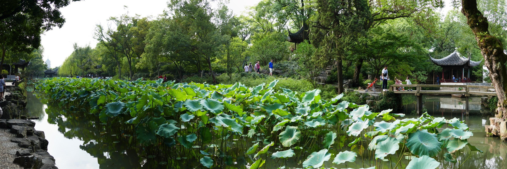

框景 Framed view
以窗为框，从自然中取景。
An opening selects a scene.
一扇窗，
把园林留在眼前。
竹影在近处，
廊桥向远处延伸。
A window holds a garden.
Bamboo nearby, a bridge beyond.
再向前一步。
看见门后的庭院，
也看见景物之间，
原来留着空处。
One step closer.
A courtyard opens between things.
01 / 观窗 Study
Turn to the edge.
See how a window is made.
正在载入 / Loading…
02 / 成纹 Patterns
Nature, written in geometry.
一重围界，
一处邀请。
A boundary.
An invitation.
03 / 读园 See
Move a little.
See again.
以窗为框，从自然中取景。
An opening selects a scene.
让远近景物，成为园中一部分。
Near and distant views enter the garden.
遮住一部分，让另一部分显现。
What is hidden shapes what is seen.

04 / 游艺 Play
点选两块，交换位置。Select two pieces to swap.
0次交换
05 / 留笺 Take away
Send this moment
somewhere far away.
慢下来，
再看一眼。
Slow down.
Look again.